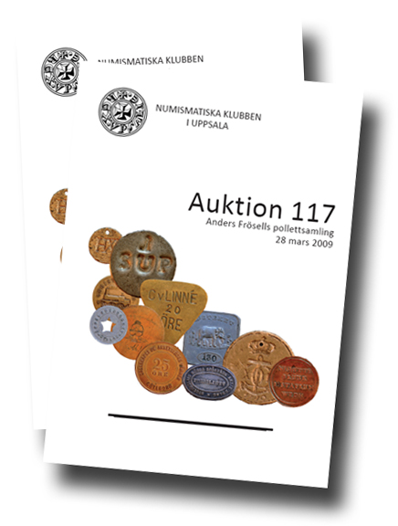

Program
Mötesreferat
Bli medlem
Historik
Stadgar
Samla mynt
Jubileumsbok
Jubileumsbok 2009
Jubileumsbok 2019
Småskrifter
Auktionskatalog
Länkar
Kontakt
Auktion 117: Anders Frösells pollettsamling
Lördagen den 28 mars, 2009, kl 11:00
Vaksalaskolans matsal, Uppsala
Visning från kl 09:00

De tryckta katalogerna är slutsålda! |
Den 88-sidiga katalogen är i A4-format, rikt illustrerad och helt i färg. Observera att utöver själva katalogen över auktionens 467 utrop och 13 helsidesplanscher med avbildningar av objekten, så innehåller den tryckta utgåvan även en tidigare opublicerad och rikt illustrerad originalartikel på 27 sidor av Ulf Carlesson med titeln Hotell- och restaurangpolletter från Stockholm. Denna artikel ingår inte i PDF-versionen av auktionskatalogen. Katalogen kan även laddas ner i PDF-format genom att klicka här och budblankett PDF kan hämtas här.
Eventuella frågor kan ställas till info@nku.nu eller per telefon 018-553645.
Auktionen är tillgänglig för medlemmar i Numismatiska Klubben i Uppsala, Sigtuna Myntklubb, Pollettgruppen och Svenska Numismatiska Föreningen.